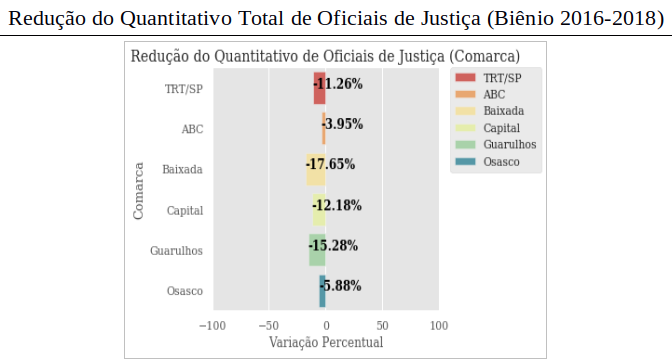
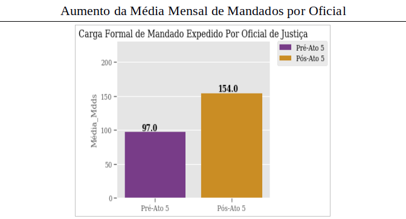
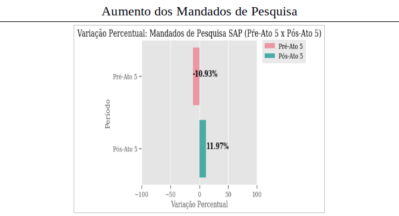
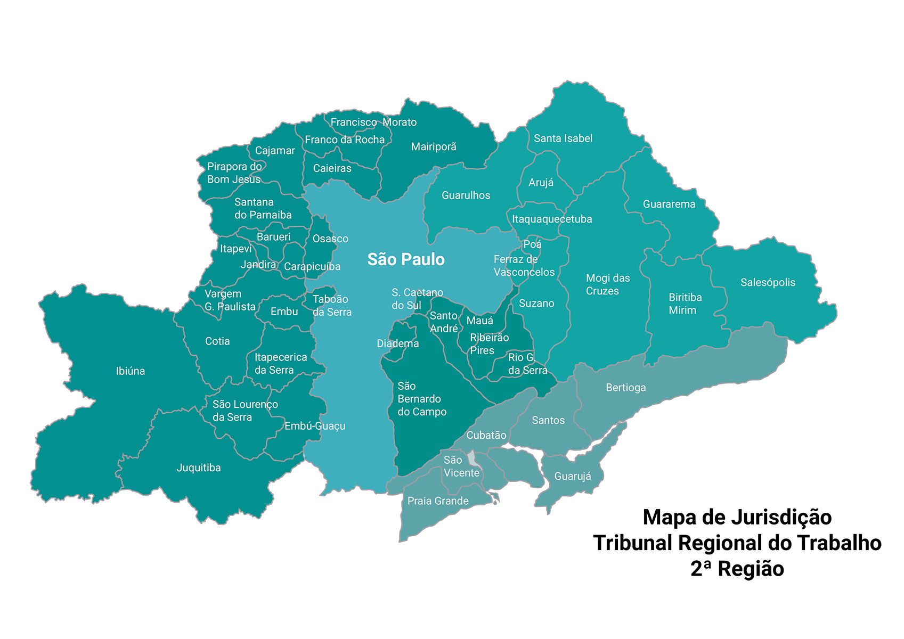

Mandados Cumpridos
1.595.839 foi o número total de mandados recebidos pelos Oficiais de Justiça entre out/2016 e out/2018.
Análise do PROAD nº 48339/2018
1.595.839 foi o número total de mandados recebidos pelos Oficiais de Justiça entre out/2016 e out/2018.
70% foi o índice de piora no prazo de cumprimento dos mandados. Apenas 23% dos prazos são menores que 20 dias.
24% dos afastamentos de Oficiais de Justiça se deu em razão de saúde.
OS DADOS COMPROVAM:
O Ato GP/CR nº 05/2017 causa prejuízos aos Oficiais de Justiça e piora a prestação jurisdicional à Sociedade.
O biênio 2016-2018 terminou com 69 cargos de Oficiais de Justiça vagos. Com o Ato GP/CR nº 5/2017, 42% dos Oficiais de Justiça foram lotados nas Secretarias das Varas do Trabalho. Isso significa menos servidores nas ruas auxiliando nos pagamentos de dívidas trabalhistas.
Com o Ato GP/CR nº 5/2017, houve um acréscimo de 59% da carga mensal de mandados por Oficial de Justiça Ativo. São 57 mandados a mais por Oficial por mês.
Ao romper com a racionalidade das Centrais de Mandados, o Ato GP/CR nº 5/2017 elevou o índice de retrabalho. São mais mandados do mesmo tipo e menor efetividade da execução.
Com as Centrais de Mandados desguarnecidas, ampliou-se a área territorial de cada servidor. Além disso, os Oficiais de Justiça removidos para as Secretarias das Varas não possuem região definida. Resultado: maior tempo de deslocamento e maior demora na prestação jurisdicional.
